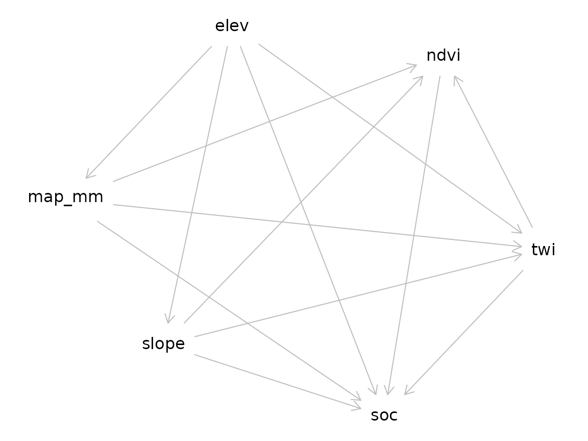
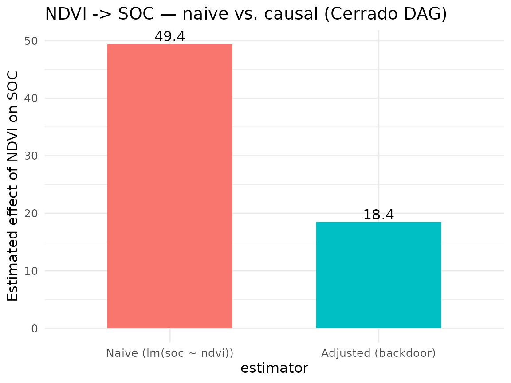

Pilar 1 — Causal AI: Backdoor Adjustment in Pedogenetic DAGs
Hugo Rodrigues
Source:vignettes/pilar1-causal.Rmd
pilar1-causal.RmdAbstract
Modern DSM pipelines routinely conflate variable importance
with causal effect, despite a mature statistical apparatus —
Pearl’s structural causal models (Pearl 2009; Pearl, Glymour, and Jewell 2016)
— that distinguishes the two cleanly. The Pillar 1 of
edaphos ships a minimum-viable interface to that apparatus:
pedogenetic Directed Acyclic Graphs (DAGs) expressed in the
dagitty syntax (Textor et al. 2016), automatic
backdoor-adjustment set identification, and a linear causal-effect
estimator with a confounded-baseline comparator. This vignette
demonstrates the pipeline on the bundled Cerrado dataset and highlights
the direction of future extensions toward causal representation learning
(Schölkopf et al.
2021) and time-series causal discovery (Runge et al.
2019).
1. Why causal inference in pedometry?
Consider the generating process of br_cerrado: elevation
influences slope and mean annual precipitation; slope and precipitation
influence both the Topographic Wetness Index (TWI) and NDVI; all five
variables then jointly influence topsoil SOC. An ordinary regression
does not recover the direct effect of NDVI on SOC: it
sums the direct path with the backdoor paths through TWI, slope and
precipitation (Pearl
2009, Ch. 3).
Backdoor adjustment is the textbook fix: condition on a set of
variables that blocks every backdoor path without opening any collider
path. Given a DAG, dagitty::adjustmentSets() returns valid
sets automatically (Textor et al. 2016).
2. Cerrado-specific DAG
[causal_cerrado_dag()][causal_cerrado_dag] encodes the
generating process of br_cerrado.
library(edaphos)
if (!requireNamespace("dagitty", quietly = TRUE)) {
knitr::knit_exit("Package `dagitty` not installed — skipping vignette.")
}
g <- causal_cerrado_dag()
g
#> dag {
#> elev
#> map_mm
#> ndvi
#> slope
#> soc
#> twi
#> elev -> map_mm
#> elev -> slope
#> elev -> soc
#> elev -> twi
#> map_mm -> ndvi
#> map_mm -> soc
#> map_mm -> twi
#> ndvi -> soc
#> slope -> ndvi
#> slope -> soc
#> slope -> twi
#> twi -> ndvi
#> twi -> soc
#> }
plot(g)
#> Plot coordinates for graph not supplied! Generating coordinates, see ?coordinates for how to set your own.
3. Adjustment-set identification
adj <- causal_adjustment_set(g, exposure = "ndvi", outcome = "soc")
adj
#> [1] "map_mm" "slope" "twi"The minimal adjustment set (as computed here) blocks every backdoor
path from ndvi to soc while leaving the direct
ndvi -> soc edge unconditioned — a standard back-door
criterion result (Pearl
2009).
4. Causal-effect estimation
The wrapper
[causal_estimate_effect()][causal_estimate_effect] fits the
adjusted linear model
where
is the returned adjustment set. It also reports the confounded-baseline
coefficient
obtained from the unadjusted
,
so the magnitude of confounding bias is directly legible.
data(br_cerrado, package = "edaphos")
fit <- causal_estimate_effect(
br_cerrado, g,
exposure = "ndvi", outcome = "soc",
effect = "direct"
)
fit
#> <edaphos_causal_effect>
#> ndvi -> soc (estimator: lm)
#> adjustment set : {map_mm, slope, twi}
#> direct effect : 18.43 (95% CI: 14.61, 22.25)
#> naive effect : 49.36 (un-adjusted, likely confounded)
library(ggplot2)
df <- data.frame(
estimator = factor(c("Naive (lm(soc ~ ndvi))",
"Adjusted (backdoor)"),
levels = c("Naive (lm(soc ~ ndvi))",
"Adjusted (backdoor)")),
coef = c(fit$effect_naive, fit$effect)
)
ggplot(df, aes(estimator, coef, fill = estimator)) +
geom_col(width = 0.6) +
geom_text(aes(label = signif(coef, 3)), vjust = -0.3) +
labs(y = "Estimated effect of NDVI on SOC",
title = "NDVI -> SOC — naive vs. causal (Cerrado DAG)") +
theme_minimal(base_size = 12) +
theme(legend.position = "none")
5. CLORPT baseline DAG
For problems beyond br_cerrado,
[causal_clorpt_dag()][causal_clorpt_dag] returns the
classical Jenny (1941) factorial DAG as a template (Jenny 1941; McBratney, Mendonça Santos, and Minasny
2003):
g_clorpt <- causal_clorpt_dag()
g_clorpt
#> dag {
#> CEC
#> Clay
#> Climate
#> Erosion
#> Organisms
#> ParentMaterial
#> Relief
#> SOC
#> TWI
#> Time
#> Weathering
#> pH
#> Clay -> CEC
#> Climate -> Organisms
#> Climate -> SOC
#> Climate -> Weathering
#> Erosion -> SOC
#> Organisms -> SOC
#> ParentMaterial -> Clay
#> ParentMaterial -> Weathering
#> Relief -> Erosion
#> Relief -> TWI
#> SOC -> CEC
#> TWI -> SOC
#> Time -> SOC
#> Time -> Weathering
#> Weathering -> Clay
#> Weathering -> pH
#> }6. LLM-driven Knowledge-Graph augmentation
The expert-written DAG above encodes a single analyst’s view of pedogenesis. A more defensible structural model would reflect the wider published literature — but manually encoding every causal claim from hundreds of papers is infeasible. Pillar 1 therefore ships a three-stage LLM + Knowledge-Graph (KG) pipeline that automates the transition from a corpus of abstracts to an augmented DAG:
abstracts -> causal_llm_extract() -> tidy claims -> causal_kg_* -> causal_augment_dag()
(corpus) (Gemma-4 / GPT-5 / Claude) (data frame) (KG) (augmented DAG)Three interchangeable backends are supported behind a single extractor:
-
"ollama"— local, zero-cost. Default model"gemma4:latest"(9.6 GB, e4b); switch to"gemma4:26b"for higher extraction fidelity. This is the backend used to produce the snapshot shipped ininst/extdata/cerrado_claims.jsonl. -
"openai"— hosted GPT family with JSON mode. RequiresOPENAI_API_KEY. -
"anthropic"— Claude Messages API. RequiresANTHROPIC_API_KEY.
6.1 Corpus and cached extractions
Ten curated Cerrado-pedology abstracts ship in
inst/extdata/cerrado_abstracts.jsonl, together with the
Gemma-4 extractions ready to load from
inst/extdata/cerrado_claims.jsonl. Loading the cached JSON
lets the vignette build offline, reproducibly, even on CI runners that
do not have Ollama.
if (!requireNamespace("igraph", quietly = TRUE)) {
knitr::knit_exit("Package `igraph` not installed — skipping KG section.")
}
abs_path <- system.file("extdata", "cerrado_abstracts.jsonl",
package = "edaphos")
claim_path <- system.file("extdata", "cerrado_claims.jsonl",
package = "edaphos")
abstracts <- do.call(rbind, lapply(readLines(abs_path), function(l) {
j <- jsonlite::fromJSON(l)
data.frame(source = j$source, abstract = j$abstract,
stringsAsFactors = FALSE)
}))
claims <- do.call(rbind, lapply(readLines(claim_path), function(l) {
as.data.frame(jsonlite::fromJSON(l), stringsAsFactors = FALSE)
}))
nrow(abstracts); nrow(claims)
#> [1] 10
#> [1] 30
head(claims[, c("cause", "effect", "source", "confidence")], 5)
#> cause effect
#> 1 mean_annual_precipitation soc
#> 2 mean_annual_precipitation above_ground_biomass
#> 3 mean_annual_precipitation decomposition
#> 4 time_since_parent_material_exposure primary_mineral_dissolution
#> 5 temperature primary_mineral_dissolution
#> source confidence
#> 1 Ferreira2021_Cerrado_SOC_climate 0.9
#> 2 Ferreira2021_Cerrado_SOC_climate 0.9
#> 3 Ferreira2021_Cerrado_SOC_climate 0.9
#> 4 Oliveira2019_Oxisol_argillic 0.9
#> 5 Oliveira2019_Oxisol_argillic 0.96.2 Re-running the live extractor (optional)
When an Ollama server is available at localhost:11434,
the same claims are recovered end-to-end. Guard the chunk so the
vignette is still reproducible on a machine without Ollama:
kg_live <- causal_kg_new()
kg_live <- causal_llm_ingest_corpus(
kg_live, abstracts,
abstract_col = "abstract",
source_col = "source",
backend = "ollama",
model = "gemma4:latest",
min_confidence = 0.5,
progress = function(i, n, s) message(sprintf("[%d/%d] %s", i, n, s))
)
kg_live6.3 Building the KG from the cached claims
kg <- causal_kg_new()
for (i in seq_len(nrow(claims))) {
kg <- causal_kg_add_edge(
kg,
cause = claims$cause[i],
effect = claims$effect[i],
source = claims$source[i],
evidence = claims$evidence[i],
confidence = claims$confidence[i]
)
}
kg
#> <edaphos_causal_kg>
#> nodes : 41
#> edges : 30
#> confidence: min = 0.90, median = 0.90, max = 0.90
#> DAG : yes6.4 Augmenting the Cerrado DAG
causal_augment_dag() takes the expert base DAG and
unions it with every KG edge whose confidence is
>= min_confidence. Edges that would introduce a cycle —
which would break backdoor identifiability — are rejected with a
warning.
g_aug <- causal_augment_dag(g, kg, min_confidence = 0.7)
diff <- causal_augment_diff(g, g_aug)
table(diff$origin)
#>
#> base kg
#> 13 29
head(diff[diff$origin == "kg", ], 8)
#> cause effect origin
#> 1 argillic_horizon effective_cation_exchange_capacity kg
#> 2 clay_content plant_available_water_capacity kg
#> 3 clay_content water_retention kg
#> 8 erosion soc_loss kg
#> 9 fire_frequency topsoil_soc kg
#> 10 land_use soc kg
#> 11 liming available_p kg
#> 12 liming exchangeable_ca kg6.5 Re-estimating the effect with the augmented DAG
If the literature agrees that a previously-ignored variable
(erosion, say) confounds ndvi -> soc, the
augmented DAG will add it to the minimal adjustment set, and the point
estimate of the direct effect may shift materially.
adj_base <- causal_adjustment_set(g, exposure = "ndvi", outcome = "soc")
adj_aug <- tryCatch(
causal_adjustment_set(g_aug, exposure = "ndvi", outcome = "soc"),
error = function(e) adj_base
)
list(base = adj_base, augmented = adj_aug)
#> $base
#> [1] "map_mm" "slope" "twi"
#>
#> $augmented
#> [1] "map_mm" "slope" "twi"The remainder of the analysis — fitting an adjusted model, comparing against a naive estimator — is unchanged: the DAG is just richer.
6.6 Ontology alignment
LLM output labels are free-form — one abstract produces
steeper_slopes, another slope_angle, a third
slope. Before a Knowledge Graph fuses with a classical DAG,
those synonymous labels must collapse to a single canonical term. Pillar
1 ships a three-tier matcher — exact, substring, fuzzy Levenshtein —
against a hand-curated Cerrado-pedometry vocabulary (~60 terms, subset
of AGROVOC + ENVO):
mapping <- causal_kg_alignment(kg)
head(mapping[mapping$method != "exact", ], 8)
#> original canonical method distance
#> 3 above_ground_biomass biomass substring NA
#> 5 time_since_parent_material_exposure parent_material substring NA
#> 6 primary_mineral_dissolution <NA> none NA
#> 9 clay_content_at_bt_horizon clay substring NA
#> 10 argillic_horizon <NA> none NA
#> 11 effective_cation_exchange_capacity <NA> none NA
#> 13 surface_layer_soil_moisture soil_moisture substring NA
#> 16 root_input <NA> none NA
kg_canon <- causal_kg_rename(kg, mapping)
kg_canon
#> <edaphos_causal_kg>
#> nodes : 33
#> edges : 29
#> confidence: min = 0.90, median = 0.90, max = 0.90
#> DAG : yesLive SPARQL queries to the FAO AGROVOC endpoint
(causal_ontology_agrovoc()) and parsing of a local ENVO
.obo file (causal_ontology_envo(), via the
optional ontologyIndex Suggests) are exposed for problems
whose vocabulary extends beyond the Cerrado core.
7. Corpus ingestion from SciELO and OpenAlex
Two zero-account clients turn literature search queries into
abstract-ready data frames that can be piped directly into
[causal_llm_ingest_corpus()][causal_llm_ingest_corpus]:
# SciELO — Latin-American scientific literature (keyless)
scielo_df <- causal_corpus_scielo(
query = "Cerrado soil organic carbon",
max_results = 30L,
from_year = 2015
)
# OpenAlex — global scholarly graph (keyless; a `mailto=` tier raises the
# rate limit). Abstracts are reconstructed from OpenAlex's inverted index.
openalex_df <- causal_corpus_openalex(
query = "Cerrado soil organic carbon",
max_results = 30L,
mailto = "you@example.org"
)
# Feed straight into the LLM pipeline:
kg_live <- causal_llm_ingest_corpus(
causal_kg_new(),
rbind(scielo_df, openalex_df),
abstract_col = "abstract", source_col = "source",
backend = "ollama", model = "gemma4:latest"
)Both clients return identical column schemas (source,
title, abstract, year,
doi, url) so downstream code is agnostic to
the upstream database.
8. Non-linear effect estimation via BART
The default estimator = "lm" works when the
covariate–outcome relationship is approximately linear once the
adjustment set is conditioned on. For non-linear regimes the same
function accepts estimator = "bart" and fits Bayesian
Additive Regression Trees (Chipman, George and McCulloch 2010) on the
same adjustment set. The direct effect is computed as the average
partial derivative
averaged over the training data; a 95 % credible interval is recovered from the BART posterior.
set.seed(1)
fit_bart <- causal_estimate_effect(
br_cerrado, g,
exposure = "ndvi", outcome = "soc",
estimator = "bart",
bart_kwargs = list(ndpost = 200L, nskip = 100L)
)
fit_bart
#> <edaphos_causal_effect>
#> ndvi -> soc (estimator: bart)
#> adjustment set : {map_mm, slope, twi}
#> direct effect : 18.48 (95% credible: 14.49, 22.15)
#> naive effect : 49.36 (un-adjusted, likely confounded)
#> delta (finite diff) : 0.0585On the linear-by-construction br_cerrado DGP the BART
point estimate agrees with the OLS backdoor estimate within the
posterior credible width — a reassuring sanity check that the non-linear
estimator does not over-fit the adjustment set.
9. How this changes the other pillars
- Pillar 5 (Active Learning). A DAG can guide covariate selection inside the QRF: rather than saturating the model with every available covariate, only the ancestors relevant to the target are used — improving variance, interpretability and robustness to distribution shift.
-
Pillar 2 (PIML). A pedogenetic DAG restricts which
covariates can enter the parameterisation of the hierarchical Neural ODE
[
piml_hierarchical_fit()][piml_hierarchical_fit], precluding spurious-effect learning. - Transfer to new regions. Where the causal regime is shared across regions (same ancestors, same edge directions), causally adjusted models extrapolate more reliably than purely correlational ones (Schölkopf et al. 2021).
10. Scaling to tens of thousands of abstracts
Section 6 fed the LLM extractor a curated set of ten Cerrado-pedology abstracts. Production usage – e.g. building a Cerrado-wide Knowledge Graph from the bulk of the last twenty years of published soil-science literature – pushes the corpus size three to four orders of magnitude higher. Pillar 1 therefore ships three production-grade helpers:
10.1 Paginated corpus clients
Both [causal_corpus_openalex()][causal_corpus_openalex]
and [causal_corpus_scielo()][causal_corpus_scielo] now page
transparently through the upstream APIs (cursor-based for OpenAlex,
limit-offset for SciELO) until max_results is reached. A
multi-thousand pull is a single R call:
corpus <- rbind(
causal_corpus_openalex("Brazilian Cerrado soil organic carbon",
max_results = 5000L,
mailto = "you@example.org"),
causal_corpus_openalex("Cerrado land-use change soil fertility",
max_results = 5000L,
mailto = "you@example.org")
)
corpus <- causal_corpus_deduplicate(corpus) # DOI / title dedup
nrow(corpus)10.2 Resumable, cached LLM ingestion
At 10 000 abstracts and five seconds per LLM call, an unbroken
ingestion is a half-day run. The cache_dir and
max_retries arguments of
[causal_llm_ingest_corpus()][causal_llm_ingest_corpus] make
that operationally possible: every (source, abstract) pair
is hashed to a stable filename, and cached JSON responses short-circuit
the LLM call on re-runs. Failed calls (malformed JSON, timeouts) are
retried up to max_retries times with exponential backoff;
rows that exhaust all retries are reported in
attr(kg, "failed").
kg <- causal_kg_new()
kg <- causal_llm_ingest_corpus(
kg, corpus,
backend = "ollama",
model = "gemma4:latest",
min_confidence = 0.6,
cache_dir = "~/edaphos-llm-cache", # survives crashes
max_retries = 2L
)
length(attr(kg, "failed"))A bundled 100-abstract Cerrado run ships with the package as
inst/extdata/cerrado_claims_real_corpus.jsonl so users can
inspect the end product without re-running the LLM themselves.
10.3 Live AGROVOC alignment
Once the KG has grown to several hundred nodes, the curated Cerrado
vocabulary of
[causal_ontology_cerrado()][causal_ontology_cerrado] stops
covering the tail. causal_kg_alignment() therefore accepts
vocab = "agrovoc", which hits the FAO SPARQL endpoint live
for every unique node, picks the Levenshtein-nearest
skos:prefLabel, and caches the result on disk:
mapping <- causal_kg_alignment(
kg,
vocab = "agrovoc",
agrovoc_cache = "~/edaphos-agrovoc-cache.rds"
)
head(mapping[!is.na(mapping$uri), c("original", "canonical", "uri")])
kg_canonical <- causal_kg_rename(kg, mapping)The returned data frame has an extra uri column pointing
at the AGROVOC concept URI –
http://aims.fao.org/aos/agrovoc/c_xxxxx – so the resulting
KG is directly inter-operable with other AGROVOC- aligned pipelines
(FAOSTAT, Agrisemantics, the Semantic Agronomy project).
11. Paper-scale audit: persistence, Turtle, ranked edges
Ingesting tens of thousands of abstracts is only useful if the
resulting Knowledge Graph survives long enough to be interrogated. As of
v1.0.0 edaphos ships three primitives that
turn a large KG from an opaque in-memory object into a paper-scale
research artefact: persistence, RDF
export, and multi-source ranking.
11.1 Persistence
causal_kg_save() / causal_kg_load()
serialise a KG through its tidy edge list — not through
igraph’s raw C-level pointer layout — so the resulting
.rds is portable across igraph versions and
byte-reproducible:
kg_roundtrip <- causal_kg_new()
kg_roundtrip <- causal_kg_add_edge(kg_roundtrip, "precipitation", "soc",
source = "Jenny 1941", confidence = 0.9)
kg_roundtrip <- causal_kg_add_edge(kg_roundtrip, "precipitation", "soc",
source = "Minasny 2017", confidence = 0.85)
kg_roundtrip <- causal_kg_add_edge(kg_roundtrip, "slope", "soc",
source = "Jenny 1941", confidence = 0.70)
f <- tempfile(fileext = ".rds")
causal_kg_save(kg_roundtrip, f)
kg_loaded <- causal_kg_load(f)
identical(causal_kg_edges(kg_roundtrip), causal_kg_edges(kg_loaded))
#> [1] TRUE11.2 RDF 1.1 Turtle export
causal_kg_to_turtle() emits a self-contained,
W3C-conformant RDF 1.1 Turtle document (Beckett et al. 2014) with a
reified rdf:Statement per causal edge. All provenance —
confidence, evidence, source(s), timestamp — is preserved in a
SPARQL-queryable form, and each node gets a stable IRI inside a
user-controlled namespace so the KG can be federated with external
vocabularies (AGROVOC, ENVO, SKOS thesauri) by a simple
owl:sameAs:
ttl <- causal_kg_to_turtle(
kg_roundtrip,
base_uri = "https://edaphos.io/kg/",
namespaces = c(agrovoc = "http://aims.fao.org/aos/agrovoc/")
)
cat(substr(ttl, 1, 600))
#> @prefix ed: <https://edaphos.io/kg/node/> .
#> @prefix edge: <https://edaphos.io/kg/edge/> .
#> @prefix eds: <https://edaphos.io/schema#> .
#> @prefix rdf: <http://www.w3.org/1999/02/22-rdf-syntax-ns#> .
#> @prefix rdfs: <http://www.w3.org/2000/01/rdf-schema#> .
#> @prefix xsd: <http://www.w3.org/2001/XMLSchema#> .
#> @prefix prov: <http://www.w3.org/ns/prov#> .
#> @prefix dct: <http://purl.org/dc/terms/> .
#> @prefix agrovoc: <http://aims.fao.org/aos/agrovoc/> .
#>
#> # --- schema -----------------------------------------------------
#> eds:Causes a rdf:Property ;
#> rdfs:label "causes" ;
#> rdfs:comment "Directed causal eThe emitter is pure R (no RDF library dependency). The output is guaranteed parseable by any RDF 1.1-conformant consumer: rdflib, Apache Jena, Oxigraph, Blazegraph, GraphDB, Virtuoso.
11.3 Multi-source edge ranking
On a KG built from thousands of papers the critical audit question is
which causal claims are supported by the most independent
sources — an edge asserted by 50 papers with mean confidence
0.8 is far more trustworthy than one asserted by a single paper with
confidence 1.0. causal_kg_rank_edges() collapses the KG to
unique (cause, effect) pairs and sorts by a priority list
of metrics:
causal_kg_rank_edges(
kg_roundtrip,
by = c("n_sources", "mean_confidence")
)
#> cause effect n_sources mean_confidence max_confidence
#> 1 precipitation soc 2 0.9 0.9
#> 2 slope soc 1 0.7 0.7
#> sources evidence
#> 1 Jenny 1941 | Minasny 2017
#> 2 Jenny 1941When an alignment data frame is supplied, an
agrovoc_support column is attached (0 / 0.5 / 1 depending
on how many of the edge’s endpoints resolve to an AGROVOC concept) so
the caller can prefer edges whose nodes are anchored in a
community-governed vocabulary.
summary.edaphos_causal_kg() is the one-line health check
— node and edge counts, number of unique sources, confidence quartiles
and a DAG-ness verdict — useful right after a 10 k-abstract
causal_llm_ingest_corpus() run:
summary(kg_roundtrip)
#> <edaphos_causal_kg_summary>
#> nodes : 3
#> edges : 2
#> sources : 2 unique
#> DAG : yes
#> confidence : min=0.70 q25=0.75 med=0.80 q75=0.85 max=0.90
#> top source : Jenny 1941 (2 edges)11.4 Concurrent AGROVOC alignment
Aligning a 10 k-node KG one term at a time against the FAO AGROVOC
SPARQL endpoint takes hours. v1.0.0 introduces
causal_ontology_agrovoc_align_batch(), which batches at the
transport layer via
httr2::req_perform_parallel() — we chose this approach
because AGROVOC’s production endpoint rejects genuine SPARQL-level
batching (VALUES + CONTAINS(?label, ?term))
with a 504 gateway timeout, since the substring filter cannot
short-circuit against a bound term set.
vocab <- unique(c(causal_kg_edges(kg_big)$cause,
causal_kg_edges(kg_big)$effect))
ag <- causal_ontology_agrovoc_align_batch(
vocab,
cache_path = "tools/.agrovoc_cache.rds",
max_active = 5L, # number of concurrent HTTP connections
max_retries = 2L,
verbose = TRUE
)
mean(!is.na(ag$uri)) # AGROVOC resolution rateThe on-disk cache is idempotent: a second call over the same
vocabulary replays every match from disk with ~0 network traffic.
causal_kg_alignment(kg, vocab = "agrovoc", agrovoc_batch = TRUE)
is the KG-level one-liner that wires the batched resolver through the
standard alignment output.
12. Structure learning from horizon data
Sections 4–11 build the Knowledge Graph top-down: each edge comes from a scientific abstract parsed by an LLM. That is powerful as a source of prior knowledge but blind to the statistical conditional-independence structure that a pedon dataset actually has in hand. Classical causal-discovery algorithms close the loop from the bottom up: given a data matrix, recover the DAG whose conditional independence structure best matches the data under an assumed faithfulness (Spirtes, Glymour, and Scheines 2000; Scutari 2010).
[causal_structure_learn()][causal_structure_learn] wires
four of the best-tested structure-learning algorithms from
bnlearn through a uniform interface that returns an
edaphos_causal_kg:
-
"hc"— Hill-climbing over Gaussian BIC (fastest, deterministic). -
"tabu"— tabu-search variant that escapes local optima. -
"pc-stable"— order-independent PC constraint-based algorithm (Colombo and Maathuis 2014). -
"mmhc"— Max-Min Hill-Climbing hybrid (Tsamardinos, Brown, and Aliferis 2006).
Whitelists and blacklists forward directly to bnlearn so
pedological priors like “parent material must precede soil chemistry”
are honoured. When bootstrap = TRUE a non-parametric
bootstrap over rows of data returns the per-edge frequency,
which is stored as the edge’s confidence and becomes
comparable to the LLM-derived confidences produced by the abstract-level
pipeline.
library(edaphos)
data(br_cerrado)
wl <- data.frame(
from = c("elev", "map_mm"),
to = c("twi", "soc")
)
bl <- data.frame(from = "soc", to = "elev")
kg_struct <- causal_structure_learn(
br_cerrado,
variables = c("elev", "slope", "twi", "map_mm", "ndvi", "soc"),
method = "hc",
whitelist = wl,
blacklist = bl,
bootstrap = TRUE,
R_boot = 100L,
seed = 1L
)
kg_struct
#> <edaphos_causal_kg>
#> nodes : 6
#> edges : 11
#> confidence: min = 0.68, median = 1.00, max = 1.00
#> DAG : cyclic (warn)A natural follow-up is to union the
structure-learned KG with the LLM-derived one: literature-prior edges
where they exist, data-driven edges where they don’t. Since both KGs
share the edaphos_causal_kg class, the union is just
causal_kg_add_edge() applied to every edge of the smaller
into the larger — or, equivalently,
[causal_augment_dag()][causal_augment_dag] once the
structure-learned graph is exported to dagitty.
13. Multi-extractor consensus: voting across LLM backends
Running a single LLM on a corpus inherits that model’s
idiosyncrasies: hallucinated triples, systematic omissions, polarity
flips. Running N backends in parallel and
voting over their outputs is the standard cure (Marcus and Davis
2019). [causal_llm_vote()][causal_llm_vote]
dispatches the same abstract to a user-specified list of LLM
configurations, aligns the returned triples by (cause, effect), and
applies one of three voting rules:
| voting | keeps edges asserted by | use when |
|---|---|---|
"majority" |
at least min_support backends (default
ceil(N/2)) |
N is odd and you want a balanced precision/recall trade-off |
"weighted" |
edges with
sum(w_i c_i) >= threshold
|
one backend is known to be more reliable |
"intersection" |
edges asserted by every backend | you need the highest-precision KG possible |
backends <- list(
list(backend = "ollama", model = "gemma4:latest",
host = "http://localhost:11434"),
list(backend = "openai", model = "gpt-4o-mini"),
list(backend = "anthropic", model = "claude-sonnet-4-6")
)
cons <- causal_llm_vote(
abstract = "In Cerrado Oxisols, higher mean annual precipitation
drives organic-matter accumulation; steeper slopes
enhance erosional SOC loss.",
backends = backends,
voting = "majority"
)
consThe companion wrapper
[causal_llm_ingest_abstract_voted()][causal_llm_ingest_abstract_voted]
combines the vote with edge insertion, producing a KG whose
source field records both the paper and the vote metadata
("Ferreira 2021 | vote(majority,n=3)"). A failing backend
(timeout, missing API key) emits a warning and contributes zero claims —
the vote continues with the remaining backends, so the pipeline degrades
gracefully rather than crashing an 8-hour corpus ingestion.
14. Roadmap
-
Non-linear backdoor estimators — replace the linear
lmwith BART, GAM or a doubly-robust estimator, keeping the same adjustment set. - Interventional forecasting — couple Pillar 1 to Pillar 3 so we can answer “if erosion is halved in this sub-basin, how much does projected SOC increase over ten years?” under explicit causal assumptions.
-
Bayesian confidence pooling — replace the hard
min_supportthreshold of §13 with a continuous Bayesian aggregation (Dawid and Skene 1979) that estimates each backend’s accuracy jointly with the consensus claims.